The Wallet Application is a React-based frontend interface for cryptocurrency order management, revenue tracking, and trading operations within the signals platform. It provides users with tools to create, edit, close, and monitor trading positions across different cryptocurrency symbols.
This document covers the wallet application's architecture, routing, service layer, and user interface components. For information about the backend API endpoints that this application consumes, see API Endpoints. For details about the signal processing that drives trading decisions, see Signal Processing Pipeline.
The wallet application follows a modular React architecture with dependency injection, routing management, and a comprehensive service layer for API communication.

The application uses a declarative routing system with four main routes and automatic redirects.
| Route | Component | Purpose |
|---|---|---|
/ |
Redirect | Automatically redirects to /main |
/main |
MainView |
Primary dashboard for order management |
/revenue/:symbol |
RevenueView |
Revenue analytics for specific symbols |
/order_closed/:symbol |
OrderCloseView |
Closed order details and management |
/error_page |
ErrorView |
Error handling and recovery |
The routing configuration uses ISwitchItem[] from react-declarative and integrates with the IoC container's routerService for navigation management.

The wallet application implements a comprehensive service layer that handles all API communications with the backend crypto-wallet endpoints. All services use bearer token authentication and follow a consistent request pattern.

| Service | Key Methods | API Endpoints |
|---|---|---|
ActionViewService |
commitCreate, commitEdit, commitRemove, commitClose |
/crypto-wallet/order/*, /crypto-wallet/action/commit_close |
RevenueViewService |
getLastClosePrice, getLongRangeStatus, getShortRangeStatus, getSwingRangeStatus, getVolumeDataStatus |
/crypto-wallet/status/* |
OrderCloseViewService |
paginate, findOne, revertCancellation |
/crypto-wallet/order_close/* |
ReportViewService |
getOrderReport, getHistoryReport |
/crypto-wallet/report/* |
The OrderGridWidget is the primary interface component for order management, providing a comprehensive grid with CRUD operations, real-time price updates, and administrative controls.
The widget displays orders with the following column structure:
colorHelperService.getColorByIndex()formatAmount()
All administrative actions require password verification using the constant ADMIN_PASS = "88888888".
The application implements comprehensive error handling with a dedicated ErrorView component that handles both application errors and offline states.
The wallet application supports a complete order lifecycle management system with the following workflow:

Each order contains the following key properties managed through the OpenOrder model:
id: Unique order identifiercoin: Cryptocurrency symbolprice: Purchase pricequantity: Order quantitydate: Order creation timestampcomment: Order description/notes